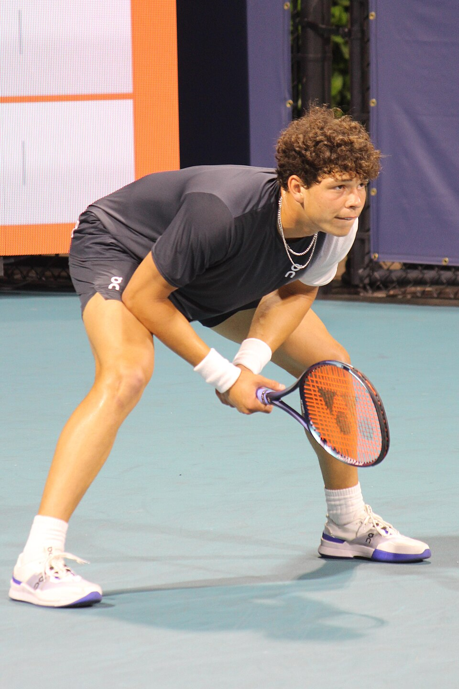

.jpg)
Benjamin Todd Shelton[1] (Atlanta, Georgia; 9 de octubre de 2002), conocido deportivamente como Ben Shelton, es un tenista profesional estadounidense.
Shelton es hijo del extenista profesional Bryan Shelton, entrenador del equipo masculino de tenis de los Florida Gators.[2] Su madre, Lisa Witsken Shelton, también fue una tenista juvenil de alto nivel, y su tío, Todd Witsken, fue tenista profesional. Su hermana, Emma, jugó tenis universitario en Florida. Shelton nació en Atlanta, Georgia, ya que su padre era el entonces entrenador del equipo femenino de tenis de Georgia Tech.[3] Se graduó de la escuela secundaria Buchholz y actualmente reside en Gainesville, Florida.
Shelton hizo su debut en el cuadro principal de Grand Slam como wildcard en el Abierto de Estados Unidos de 2022. Ganó el Campeonato nacional juvenil de la USTA de 2016 en dobles. Jugó tenis universitario con los Florida Gators, donde ganó el título individual masculino en el Campeonato de la División I de Tenis Masculino de la NCAA en 2022. Ese mismo año, fue nombrado Jugador Nacional del Año de la ITA.
Desde 2025 mantiene una relación con la futbolista Trinity Rodman.
Shelton alcanzó el puesto número 3.° en la clasificación de la división USTA Boys' 18s.[4] Fue subcampeón en el USTA Boys 18s Winter Nationals de 2020 y ganó el torneo USTA Boys 16s de 2019 en dobles.[4]
Shelton tuvo resultados mixtos en el circuito juvenil de la ITF y alcanzó una clasificación combinada juvenil de 306.° en diciembre de 2020.[5]

En su debut en el Abierto de Australia de 2023, Shelton llegó a la cuarta ronda, con victorias sobre Zhang Zhizhen, Nicolas Jarry y Alexei Popyrin.[6] Este fue solo el segundo Grand Slam de Shelton después del US Open de 2022.[7] Luego derrotó a su compatriota JJ Wolf para llegar a los cuartos de final de un Grand Slam por primera vez en su carrera.[8] Su participación concluyó con una derrota en cuatro sets ante su compatriota estadounidense Tommy Paul. Como resultado, subió 53 posiciones hasta el top 50, al puesto número 44.° del mundo, por primera vez en su carrera.[9][10]
En el Torneo de Houston 2024 alcanzó sus primeros cuartos de final en canchas de arcilla derrotando a Zizou Bergs,[11] y su primera semifinal derrotando a su compatriota Brandon Nakashima. Luego derrotó al cuarto cabeza de serie Tomás Martín Etcheverry para llegar a su primera final en cancha de arcilla. Ganó su segundo título profesional y el primero en arcilla convirtiéndose en el campeón más joven desde Andy Roddick en 2002, derrotando al tercer cabeza de serie Frances Tiafoe en la final.[12][13] Como resultado, alcanzó un nuevo ranking individual más alto de su carrera de 14.° del mundo el 8 de abril de 2024, y se convirtió en el jugador número 1.° estadounidense por delante de Taylor Fritz una semana después.[14]